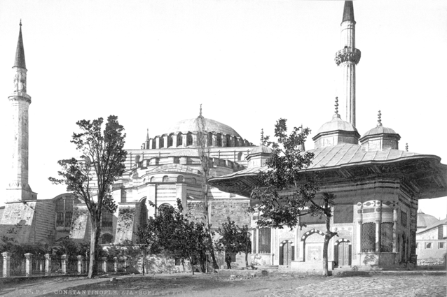

DÖRDÜNCÜ BÖLÜM
ÇANAKKALE’DEN HATIRDA KALAN
Seferberliğin Adı Savaş Oldu
Seferberlik bir ülkenin askerî, siyasi ve ekonomik olarak savaşa hazır hale gelmesi için yapılan çalışmaların bütününe verilen bir isimdir. Seferberlik ilanından sonra yapılan ilk işlerden biri asker alımıdır.
I. Dünya Savaşı esnasında ilan edilen seferberlik ile pek çok genç, Osmanlı ordusuna alınır. Anadolu insanında seferberlik tabiri o kadar yer eder ki giden oğulların, kocaların, babaların savaşa gittiklerini anlatmak için seferberliğe gittiği söylenir. Bu topraklarda, bu kelimenin manası çok değişir. Seferberliğin adı, savaş olmuştur; savaşın adı, gidenin geri gelmediği diyar…
Çanakkale Muharebeleri’nde İlk Türk Taarruzu
Çanakkale Kara Savaşlarında ilk Türk taarruzu Anafartalar civarına çıkan İngilizlere karşı 27 Nisan 1915 sabahı yapıldı. Arıburnu’ndaki Türk birliklerinin gerçekleştirdiği taarruz, İngiliz-Fransız donanmasının şiddetli bombardımanı sebebiyle istenen neticeye ulaşmadı. İngilizleri mevkilerinden söküp atmak mümkün olmadı.
Çanakkale ve Mevleviler
Çanakkale Savaşları esnasında Osmanlı tahtında oturan Sultan Mehmed Reşat Mevlevî muhibbi olarak bilinir. Osmanlı tarihinin en ileri yaşta tahta çıkan sultanına kılıç kuşatan Mevlânâ Celaleddin Rumi neslinden gelen Konya Mevlevihanesi postnişini Abdülhalim Çelebi’dir. Sultan Reşad döneminde Yenikapı ve Bahariye Mevlevîhânelerinde büyük tamiratlar gerçekleştirilmiştir.

Çanakkale Muharebeleri esnasında hastane olarak kullanılan İstanbul Yenikapı Mevlevihanesi- Fotoğraf Nurdoğan Çakmakçı
Mevlevihaneler Mevlevilere ait mekânlar olarak kullanılmamış mühim sosyal roller de ifa etmişlerdir. Çanakkale Savaşları esnasında bu mekânlar yardımlaşma merkezleri olarak kullanılmıştır. Tren hattına yakın olması hasebiyle Topkapı semtindeki Yenikapı Mevlevihanesi’nde bir hastane kurulmuş ve bu hastane özellikle cepheden gelen yaralıların tedavi edildiği bir merkez hüviyeti kazanmıştır. Yenikapı’ya getirilen bir Çanakkale yaralısı eğer kurtarılamazsa Yenikapı’ya çok da uzak olmayan Edirnekapı’da defnedilmektedir. İstanbul’un en eski mevlevihanesi olan Galata’da ise Galata Mevlevihanesi şeyhi Ahmed Celaleddin Dede’nin öncülüğünde yardım kampanyaları toplanmıştır.
Osmanlı Devleti’nin savaşa girdiği ve Sultan Mehmed Reşad’ın cihâd-ı mukaddes ilan ettiği günlerde Mevlana soyundan gelen Veled Çelebi’nin liderliğinde Mevlevi Mücahit Alayı teşkil edilmiş ve bu alay Filistin Cephesi’nde görev almıştır.
Bedr’in Aslanları
Mehmet Akif Ersoy’un unutulmaz şiirindeki bu mısralar herkesin hafızasındadır.
“Ne büyüksün ki kanın kurtarıyor tevhidi
Bedr’in aslanları ancak bu kadar şanlı idi.”


Şehitlerin üzerinden çıkan Ashab-ı Bedir nüshaları
Her ne kadar geçmişte bir şekilde gündeme gelmek isteyenler tarafından bu mısralar tartışma mevzuu yapılmak istenmişse de halkın gönlünde Çanakkale yiğitlerinin, Mehmed Akif’in ve şiirinin yeri müstesnadır, aynen bu vatanın şehit evlatlarının en mümtaz yeri gibi.
Akif, Çanakkale’de çarpışanları Peygamberimiz (s.a.s.) zamanında yapılan Bedir Savaşı’ndaki kahramanlara benzeterek yapılan işin büyüklüğünü anlatmaktadır. Burada şairin Bedir Savaşı’nı neden kullandığı bilinmez lakin Çanakkale’nin Bedir ile yakından iki ilişkisi vardır.
Bedir Zaferi ile Çanakkale Deniz zaferi aynı ayda Mart ayında gerçekleşmiştir. Bedir: 13 Mart 624 Çanakkale: 18 Mart 1915
Çanakkale’deki askerlerin pek çoğunun üzerinden Ashab-ı Bedir, Bedir Savaşı’nda şehit düşenlerin listesi çıkmıştır.
Bedir Savaşı’na katılanların isimlerini okumanın üzerinde bulundurmanın, düşman karşısında Allah’ın yardımına, düşmanların şerrinden korunmaya vesile olacağına dair İslam âlimlerin ortak görüşleri mevcuttur.28
Kadınların Topladığı Yardım
6 Şubat 1915 günü Çanakkale savunmasında kahramanlık gösteren alay adına müdafaa-i milliye cemiyeti bir hediye takdim etmek yoluna gitmişti. Amasya Müdafaa-i Milliye Cemiyeti’nin koruması altında kurulan Müdafaa-i Milliye Hanımlar Şubesi iki gün içinde bin yedi yüz küsur kuruş toplayarak bunu alaya göndermişlerdi29
108 Sene Evvel
Sultan III. Selim’in son zamanlarında Osmanlı Devleti Fransa ile yakınlaşmıştı. Bundan rahatsız olan İngiltere ve Rusya, evvela ültimatom vermiş ardından da Rusya, Eflak ve Boğdan’ı işgal etmişti. İngiltere, Osmanlı donanmasının ve Çanakkale istihkâmlarının kendilerine teslimini talep etmişti. Kabulü mümkün olmayan bu istek reddedilince İngilizler Çanakkale Boğazı’nı geçmeyi başarmış ve 19 Şubat 1807’de Yeşilköy açıklarına demirlemişlerdi. Bu hadise İstanbul’da korkuya sebep olmuş ve seri bir şekilde tedbir alınmıştı. İngilizler Osmanlı kararlılığını görünce bir şey yapamadan geri çekilmeye mecbur kalmıştı.
Yine İngilizler, I. Dünya Savaşı’nda Çanakkale’ye yapacakları büyük taarruzun tarihi olarak 108 sene evvelki bu hadisenin yıldönümünü seçmiş ve 19 Şubat 1915’te Çanakkale Boğazı’na yüklenmişlerdir.
Nusret’in Mayın Döşemesindeki Sır
Savaşın belki de kaderini değiştiren hadise Nusret Mayın Gemisi’nin yaptığı büyük iştir. Ancak burada dikkati çeken pek çok husus vardır. Gemi kaptanı yahut mayın grubu komutanı rüyasında mayınların nereye döşeneceğini görür veya görmez. Ancak bir gerçek vardır ki o da mayınların döşenmesinde belki de dünyada görülmeyen bir taktiğin izlenmiş olmasıdır.
Normalde mayınlar gemilerin ana güzergâhları üzerine ve geçişin dikine döşenir. Oysa Nusret’in döşediği mayınlar hem ana güzergâhın dışında Erenköy Koyu’nda hem de Boğaz’a dik değil paralel haldedir.
Bu diziliş hem mayınların yakalanma ihtimalini ortadan kaldırmış hem de manevra yapmak için koya giren gemilere unutulmaz bir sürpriz yapmıştır.
Çanakkale Deniz Muharebesi Kaç Saat Sürdü
Çanakkale Deniz Muharebesi 18 Mart 1915 Perşembe günü saat 10.30’da başlamış ve aynı gün 17.30 sularında düşman gemileri geri çekilmek için manevra yaptıkları görülmüştür. Bu itibarla deniz savaşının yaklaşık yedi saat devam ettiğini söylemek mümkündür.

Fransız Bouvet’in Batışı -Yitik Hazine Arşivi
Çanakkale Deniz Muharebesi’nde Kaç Şehit Verdik
Çanakkale Deniz Muharebesi’nde yedi saat zarfında müttefik donanma Osmanlı mevzilerine tonlarca mermi yağdırmıştır. Yalnız İngiliz gemileri tarafından Osmanlı tabyalarına toplam 3.344 mermi atılmıştır. Bu kadar yoğun bombardımana rağmen şehit sayısının düşük olması Osmanlı tarafında büyük sevinç meydana getirmiştir. Çanakkale Deniz Muharebesi’nde Osmanlı tarafı 24 şehit 43 yaralı vermiştir. Ancak kara savaşlarında maalesef bu sevinç çok uzun sürmeyecektir.
Çanakkale’de Kimler Savaştı
İtilaf Devletleri Kuvvetleri: İngiliz, Fransız, İskoç, İrlandalı, (Hindistan’dan Gelen) Gurkhalar, Sikhler, Yahudi ve Rumlar, Ermeniler, Zuaveler (Cezayirli piyadeler) Anzaklar (Avustralya ve Yeni Zelandalılar), (Fransız sömürgelerinden zorla getirilen) Sudanlı, Senegalli, Faslı askerler30
Osmanlı Safları: Türkler, Kürtler, Araplar, Boşnaklar, Arnavutlar, Almanlar, (çok az sayıda) Osmanlı Ermeni’si, Rum’u ve Yahudi’si
Bir Acı İfade
“… Ben Senegalliyim ve babamın adı Muhammed’dir. Fransızlar dini inançlarımızın gerektirdiği ibadetleri yerine getirmemize izin vermiyorlar. Bizi memleketimizden zorla toplayıp kopararak buraya getirdiler ve hemen savaşa sürdüler. Biz Müslümanlarla savaştığımızı bilmiyorduk. Ülkemizle ilgisi olmayan bu topraklarda savaşmak istemiyoruz. Bize Türklerin esirleri kestiklerini söylediler. Bundan dolayı teslim olmaktan kaçınıyorduk. Bizimkiler, Türklerden bu kadar iyi muamele göreceklerini bilseler, hepsi Türklerin tarafına geçerlerdi. Fransızlar bütün silahlarımızı topladılar. Adam başına günlük 4 frank vergi aldılar. Bu defa da Almanlara savaş ilân etmişler. Bizim taraflara geldiler. Reisimizden asker istediler. O da asker kalmadığını söyleyince onu dövdüler ve zorla herkesi toplayarak cepheye sürdüler. Birçoklarımız Almanlarla yapılan savaşlarda öldü, artık yetişkin kimse kalmadı…”31
Denizaltı Savaşı
Çanakkale Muharebeleri esnasında Boğaz’ın yüzeyinden geçemeyen İtilaf Devletleri Boğaz’ın derinliklerinden denizaltı (tahtelbahir) geçirerek Marmara’ya sızmışlardır. Bu sızmada maksat Marmara Denizi’nde gerek silah ve cephane nakliyatı gerekse Gelibolu’ya asker taşıyan ve dönüşte yaralı getiren gemilerin oluşturduğu trafiği kesmektir. Bu trafiğin kesilmesiyle Osmanlı 5. Ordusu lojistik destekten mahrum kalmış olacaktır. İngiliz kraliyet donanmasından E-11 ve E-14 denizaltıları Marmara’da tesirli olmuştur. Denizaltıların faaliyetleri havadan da desteklenmiştir. Anadolu’nun bu küçük iç denizi bir denizaltı savaşının meydanı hâlini almıştır.
Halkı endişelendiren ve başkentte huzursuzluğa sebep olan denizaltı tehdidi karşısında, Osmanlı donanması harekete geçerek Fransız ve İngiliz denizaltılarına hücum etmiş çarpışmalar neticesinde dört Fransız, dokuz İngiliz denizaltısı tesirsiz hale getirilmiştir. Denizaltılarla yapılan savaşta Osmanlı filosundan Barbaros Hayrettin Paşa Zırhlısı, Peleng-i Derya Topçekeri, Yarhisar Torpidobotu ve birkaç küçük gemi kaybedilmiştir.32
Topçumuz Kendi Gemimizi Vuracaktı
23 Ağustos 1915 tarihli bir belgede33 Marmara Denizi ve Çanakkale hakkında rapor verilirken ilginç bir bilgi de rapor edilir. “9-10/6 gecesi İzmit Körfezi’nden fenerlerini söndürerek geçen Seyr-i Sefâin İdaresi’nin Kalamış Vapuru’na yanlışlıkla Darıca ve Yarımca bataryalarından ateş edilmiş ise de bir hasar olmamışdır.” Marmara’da Çanakkale Muharebeleri’nden dolayı yaşanan gerginlikte karartma yaparak ilerlemeye çalışan bir vapur yine kendi topçumuzun ateşi altında kalmışsa da bu defa topçularımızın başarısızlığı bir felakete mani olmuştur.
Denizaltı Ağı
Bu tür bir savaşta denizaltılara karşı alınabilecek en tesirli tedbir geçiş güzergâhlarına ağ döşemektir. Ancak denizaltılar bir savaşta Osmanlı’yı ilk defa bu kadar zor durumda bıraktığı için denizaltılara karşı daha evvelden gerekli tedbirleri almak mümkün olamamıştır. Her ne kadar bazı ağlar Şubat 1915’te Boğaz’a atılmışsa da denizaltıları durdurmaya yetmemiştir. Boğaz’ın derinliği 100 metreyi bulduğu için atılan ağlar en fazla 70 metreye kadar inmiş ve kimi zaman ağların altından kimi zamanda zorlayıp ağları delerek denizaltılar Çanakkale’ye geçmiştir.34

13 Aralık 1914 de batırılan Mesudiye Zırhlısı
Denizaltıların Batırdığı Gemilerimiz
Düşman denizaltıları tarafından batırılan Osmanlı donanmasına ait gemiler şunlardır:
Osmanlı donanması toplam kaybı: 21230 tondur. Gemiler şunlardır:
Barbaros Zırhlısı: 8 Ağustos 1915 de Bolayır önünde E11 batırdı.
Mesudiye Zırhlısı: 13 Aralık 1914 de Çanakkale’de B11 batırdı.
Pelengiderya Gambotu: 25 Mayıs 1915 de Bakırköy önünde E11 batırdı.
Nurülbahir Gambotu: 1 Mayıs 1915 de Mürefte-Şarköy arasında E14 batırdı.
Yarhisar Muhribi: 3 Aralık 1915 de Tuzla-Yalova arasında E11 batırdı.
Samsun Mayın Gemisi 14 Ağustos 1915 de Hora önlerinde E2 batırdı.
Sakız Karakol Gemisi 20 Ağustos 1915 de Erdek’te E2 batırdı.
Nâra Nakliye Gemisi 24 Mayıs 1915 de Tekirdağ önünde E11 batırdı.35

Fransızlardan iğtinam olunan (ele geçirilen) “Turkuaz - Müstecip Onbaşı” Tahtelbahri’nin (Denizaltı) güvertesinde. Yitik Hazine Arşivi
Balık Gibi Yakalanan Denizaltı
Denizaltılar için mania (engelleyici) ağların koordinesi için Mania Kumandanlığı tesis edilmiştir. Ağların başına birer gambot nöbet tutmakta ağa düşen denizaltı olursa derine doğru bombalar sarkıtılmaktaydı. Balık tutmaya benzer bu usul bir defa işe yaradı. İngilizlerin E7 denizaltısı bu şekilde yakalanmıştır. Denizaltı tahrip olduğundan su yüzeyine çıkmak zorunda kalmış, mürettebatı esir alınmıştır. (4 Eylül 1915)36

İnflexible
Çanakkale’de Yüzen Kaleler
Çanakkale Muharebelerine iştirak eden savaş gemileri, dretnotlar, kruvazörler, muhripler, denizaltılar vd. deniz taşıtlarının listesi aşağıdadır.
Çanakkale’de Osmanlı Donanması
Donanma Komutanı: Amiral Wilhelm Souchon (Alman)
Deniz Taşıtları: Yavuz Kruvazörü, Barbaros Hayrettin Savaş Gemisi (8 Ağustos 1915’te battı), Turgut Reis Gemisi, Mesudiye Kruvazörü (13 Aralık 1914’te battı), Hamidiye Kruvazörü, Mecidiye Kruvazörü (2 Mayıs 1915’te battı.)Midilli Kruvazörü (Çanakkale Savaşlarından sonra 20 Ocak 1918’te battı), 9 adet destroyer, 12 adet torpido bot ( Bu torpido botlardan Demirhisar Torpido Botu 16 Nisan 1915’te, Yarhisar Torpido Botu 3 Aralık 1915’te batmıştır) 2 adet eski teknolojili denizaltı, 5 adet zırhlı seyyar yüzer sahil bataryası. Bunlar dışında Almanların UB-46 denizaltısı da 12 Mayıs 1916’da batmıştır.
Çanakkale’de İngiliz Kraliyet Donanması:
Donanma Komutanı: Amiral de Robeck
Queen Elizabeth Savaş Gemisi (Dretnot37) Triumph Savaş Gemisi (25 Mayıs 1915’te battı), Queen Savaş Gemisi, Prince of Wales Savaş Gemisi, Lord Nelson Savaş Gemisi,Agamemnon Savaş Gemisi, Swiftsure Savaş Gemisi, Cornvallis Savaş Gemisi, Exmouth Kruvazörü, Irresistible Kruvazörü (18 Mart 1915’te battı) , Implacable Kruvazörü,London Kruvazörü, Canopus Kruvazörü, Albion Savaş Gemisi, Goliath Savaş Gemisi (12 Mayıs 1915’te battı), Ocean Savaş Gemisi(18 Mart 1915’te battı), Vengeance Savaş Gemisi, Majestic Savaş Gemisi (27 Mayıs 1915’te battı), Prince George Savaş Gemisi, Indefatigable Kruvazörü,Inflexible Kruvazörü( 18 Mart 1915’te ağır yara alarak savaş dışı kaldı), Indomitable Kruvazörü,Dartmouth Kruvazörü, Dublin Kruvazörü Gloucester Kruvazörü, Defence Kruvazörü, Amethyst Kruvazörü,Sapphire Kruvazörü,Cornwall Kruvazörü, Euryalus Kruvazörü, Europa Kruvazörü, Minerva Kruvazörü, Ark Royal Uçak Gemisi, 17 destroyer,6 denizaltı Ayrıca Raglan Monitör Gemisi 20 Ocak 1918’te battı, M-28 Monitör Gemisi(20 Ocak 1918’te battı), E-15 Denizaltısı (17 Nisan 1915’te battı), E-14 Denizaltısı (25 Ocak 1918 battı), E-7 Denizaltısı(4 Eylül 1915 Osmanlı kontrolüne geçti), E-20 Denizaltısı1 Kasım 1915.
Çanakkale’de Fransız Donanması:
Komutan: Amiral Guepratte
Henri-IV Savaş Gemisi, Bouvet Savaş Gemisi (18 Mart 1915’te battı), Suffren Savaş Gemisi (18 Mart 1915’te ağır yara aldı), Saint Louis Savaş Gemisi, Saphir denizaltısı 15 Ocak 1915 Osmanlı’nın eline geçti, Joule Denizaltısı 1 Mayıs 1915’te battı, Mariotte denizaltısı 26 Temmuz 1915’te battı. Turquoise denizaltısı 30 Ekim 1915’te Osmanlı’nın eline geçti, Gaulois Savaş Gemisi, Charlemagne Savaş Gemisi, Jaureguiberry Savaş Gemisi, Foudre Kruvazörü, Jean Dark Kruvazörü, Bruix Kruvazörü, Dupleix Kruvazörü, iki destroyer,19 torpido bot,6 denizaltı Ayrıca Avustralya menşeli AE-2 denizaltısı 30 Nisan 1915’te batmıştır.
İngilizler Kimlerle Savaştığını Biliyor mu
Çanakkale Savaşlarına getirilen İngiliz askerleri karşılarında Almanların olduğunu sanmaktadır. Bu gerçeğin bir ispatı ölü ele geçirilen bir İngiliz askerinin üzerinden çıkan not defterinden anlaşılmaktadır. Notta 25 Nisan’da yapılan çıkartma ile alakalı olarak “...bir yaralı Alman subayı buldum ve öldürdüm...” yazılıdır. Osmanlı makamları bu hadiseyi araştırır ve askerin bahsettiği gün ve yerde herhangi bir Alman subayın ölmediği anlaşılır. Tutulan kayıtta İngiliz’in Alman’a benzeyen bir Türk subayının veya erinin öldürülmüş olması muhtemeldir denilmiştir.38
Çanakkale Düşman Çıkartmasının Yeri
Kara savaşları için İtilaf Devletlerinin çıkartma yapmayı düşündükleri ilk nokta Seddülbahir ve Arıburnu bölgesidir. Kumluk bir alan olan Kabatepe yerine çıkartma alakasız bir yere Arıburnu’na yapılır. Sarp ve kayalık bir yer olan Arıburnu’na yapılan çıkartma başarısız olur.
Düşman birliklerinin Kabatepe yerine Arıburnu’na çıkmasının sebepleri olarak pek çok husus anlatılır. 27. Alay’dan bir askerin yüzerek denize konulan şamandıranın yerini değiştirmesi veya çıkarma gemilerinin, akıntı sebebiyle sürüklenmesi anlatılır. Şurası çok açıktır ki bu hadise Osmanlı’nın dualarının kabul olmaya başladığının göstergesidir.
Allah Allah Diyen İngilizler
İlk bakışta biraz garip gelse de Çanakkale Kara Muharebeleri’nde sıkışan bazı İngiliz birlikleri “Allah Allah” diyerek kurtulmuştur. Bu konuda bilgi veren Walter von Schoen kitabında şunları yazmaktadır: “Her iki tarafın mermileri karşılıklı olarak patladığı için olduğu yerden kımıldamak hemen hemen imkânsızdı. Nihayet düşman, yüksek sesli ‘Allah’ nidalarıyla en azından Türk ateşini susturup en az kayıpla kendi mevzilerine çekilmeyi başarmıştı.”39 “Düşman Türklerin önem verdiği kutsalları -Allah nidalarını- kendi menfaatine kullanmaktan çekinmemekteydi.”40
Osmanlılar Çanakkale Zaferi’ni Neden 5 Mart’ta Kutluyor
Osmanlı gazetelerinde Çanakkale Zaferi için sürekli 5 Mart tarihi kullanılır. Her 5 Mart’ta Çanakkale şehitlerinin hatırası yaşatılır. Osmanlı kaynaklarında da 5 Mart Zaferi olarak bilinir.
Bu durumun sebebi tamamen Miladi takvim ile Rumi takvim arasındaki farktan kaynaklanmaktadır. O dönemde kullanılan Rumi takvimde zafer 5 Mart 1331’de kazanılmıştır. Bu tarihin Miladi karşılığı 18 Mart 1915’tir.
Çay İçmek ve Vatan Kurtarmak
Newyork Times’ın 20 Ekim 1915 tarihli nüshasında Anafartalar’da İngilizlerin elinde sadece bir kuyunun bulunduğu ve askerlerin susuzluk çektiği, İmroz’dan hatta Selanik’ten su getirilmesi lazım olduğu bildirilirken Osmanlı’nın elindeki İngiliz esirlerin ifadelerine göre İngiliz askerlerin sabah çayını ancak iki fincan (yarım litre) kadar içebildikleri öğle iki bardak su içebildikleri diğer çayı ise ancak akşam beşte içebildikleri anlatılmaktadır. İngilizler savaşta çay derdindedir, karşılarındakiler ise vatan…
Tifüs Hastalığı
Çanakkale başta olmak üzere I. Dünya Savaşı esnasında görülen hastalıklar da asker kayıplarının çok fazla olmasına sebep olmuştur. 1916 yılının Temmuz ayında görevli olarak Çanakkale’de bulunan Scheele, kitabında Almanlardan alınan Goben Savaş Gemisi’nde malerya ve tifüs hastalıklarının görüldüğünden41 bahsetmektedir.
Çanakkale’de Sıtma
Çanakkale’de sıklıkla karşılaşılan bir başka hastalık sivrisinekler tarafından bulaştırılan ve tedavi edilmezse ölüme kadar götürebilen sıtma hastalığıdır. Alınan bütün tedbirler sıtmanın yaygın bir hâl almasına engel olamaz. Çanakkale bölgesinde, özellikle Kumkale’nin doğusunda ve Menderes Çayı’nın oluşturduğu bataklık alanda sıtma hastalığının yayılmasına uygun bir ortam mevcuttur. Bunun dışında yarımadanın çeşitli bölgelerindeki durgun su birikintileri de daha evvelden bölgede varlığı hissedilen sıtmanın, savaş döneminde çok daha fazla yayılmasına sebep olmuştur.
Hastalık, önceleri sadece yöre halkında görülürken bölgeye sevk edilen binlerce asker arasında da süratle yayılmaya başlamıştır. Sıtmanın yayılmasına mani olmak için temizliğe ehemmiyet verildi, askerlerin üniformaları etüvlerden yahut sahra fırınlarından geçirilerek tedbir alınmaya çalışıldı.42
Askerimizi Şehit Eden İspanyollar
Askerimizi şehit eden İspanyollar, ifadesi ilk bakışta garip karşılanabilir. Zira İspanyollarla Çanakkale’nin bir münasebeti yoktur. Askerlerimizi şehit eden de İspanyol askerleri değil, İspanyol hastalığı diye bilinen İspanyol nezlesidir. Hızla yayılan hastalık Çanakkale merkezi ile Ayvacık kasabasında şiddetle sürmüş ve bir hafta gibi kısa bir müddette 15 kişinin vefat etmesine sebep olmuştur.43 Hastalığın adının I. Dünya Savaşı’na girmemiş bir devletten gelmesi de gariptir. Bunun sebebi savaşta yer alan büyük devletlerin basınının askerî sansür dolayısıyla salgından bahsetmemesi karşısında İspanyol basınının serbestçe bu büyük salgını haber yapmasındandır.
Her Gün 40 Asker Ölüyordu
Ernst Rodenwaldt, Çanakkale’deki mevcut vaziyet hakkında malumat aktarırken şunları söyler: “Doktorların bildirdiğine göre Kilitbahir’de iç hastalıkları olan günlük 2.500 kişiden 40 kişinin üzerinde hasta ölüyordu. Burada sıhhî yüzbaşı olarak hizmet eden Yunanlı (Rum) arkadaş, haklı olarak ilk günlerde bana “Sağlık olarak (bir doktor olarak) yardım edebilecek hiç bir şeyimiz yok, ümitsizim”44 diyordu. Rodenwaldt kitabında ayrıca, askerî hastahanede, askerlerle birlikte Osmanlı vatandaşı olan Yunan, Ermeni ve Yahudi’nin de hizmet verdiğini belirtmektedir.
Düşman ve Dizanteri
Çanakkale’de en yaygın rastlanan hastalıkların başında dizanteri gelmektedir. Tarih boyunca askerî harekâtlarda, sefer yollarında, cephelerde ve savaşlar esnasında, sık görülen bir hastalık olarak dikkat çeker. Kötü beslenme şartları, temizlik imkânlarının yetersizliği, sıhhat kaidelerine dikkat edilmemesi ve göç, dizanterinin yayılmasına müsait bir zemin hazırlar. Sağlık kurallarına dikkat edilemediği zamanlarda da sık sık dizanteri salgınları görülmüştür. Öyle ki savaş sonunda tutulan istatistiklere göre hastalıktan dolayı cepheden çekilen 85.000 Türk askerinden 21.000’i dizanteriden şehit düşmüştür.45 Dizanteriden karşı tarafta perişandır.
Dizanteriyi Silah Olarak Kullanmak
İngiliz askerleri geri çekilmeler esnasında dizanteri olan arkadaşlarını siperlerde bırakırlar.46 İlk bakışta dizanterinin zayıf düşürdüğü bu askerleri taşımanın zorluğundan bu tür bir tutumun sergilendiği düşünülür. Ancak İngilizlerin Çanakkale’de oynadıkları türlü oyunlar dikkate alınınca siperde dizanteri hastası bırakmanın İngilizlere çok faydasının olacağını kestirmek zor değildir. Böylece hem kendi orduları içinde bu hastalığın yayılmasını durduracaklar hem de Türk askerlerine bulaştırmak için iyi bir fırsat yakalamış olacaklardır.
Düşman ve Sinek
Çanakkale’de çarpışan iki tarafın belki de tek ortak düşmanı vardır: sinekler. Cephenin kanla sulanan topraklarında yaşanan dram, savaşların en çirkin yüzünü de bir defa daha gün yüzüne çıkarır:
“Mevzi savaşı; üstünde haftalardan beri ölümün kol gezdiği bu ıssız, parçalanmış arazideki toprağın üstünde ve altındaki asker yığınları… Bu ağır, boğucu, yakıcı ve pırıl pırıl havada susuzluğun ıstırapları… Mavi gökyüzündeki yakıcı güneş yüzünden yavaş yavaş kavrulma… Kısa süreli girdapvari rüzgârın savurduğu kumun sebebiyet verdiği akciğer rahatsızlığı; cinnete götüren haşarat ve sineklerin verdiği eziyet; siperlerin önünde çürüyen cesetlerin salgıladığı pis koku... Bu, her gün yeni kurbanlar arayarak bin şekle giren, binlerce şeytani gülümsemeyle süzülen, havadan yırtıcı bir çatırtıyla hızla yaklaşan, yer altından ileri doğru savrularak sığınakları bütün sakinleriyle birlikte yutan silahların, şarkı söyleyerek ve mezarlar üzerinde ıslık çalarak uçması, ölüm manasına geliyordu.”47
“Siperler arasında ölenlerin bedenleri kurumakta ve sararmaktaydı. Havayı berbat eden çürümüş insan kokusu nefes almayı güçleştirmekte ve neredeyse tahammül sınırlarını aşmaktaydı. Yeryüzünün hiçbir noktasında, bu küçük üçgende olduğu kadar çok sinek ve sivrisinek yoktur. Sineklerin milyonlarcası havada vızıldamakta, siperleri, barınakları mesken edinmekteydi. Üzerinde birkaç sineğin bulunmadığı bir dilim ekmeği ve bir kaşık çorbayı ağza koymak hemen hemen imkânsızdı. Bir konserve kutusu açılır açılmaz sinekler çoktan içinde biter, her bir parça et derhal sineklerle simsiyah olurdu. En kötüsü de (Türk) savaşçıların taze yaralarıydı. Bu meşakkatin düşman tarafından da ağır bir şekilde yaşanması onlar için az da olsa bir teselli kaynağıydı.”48
Kişner mi Kişnemez mi
İngiliz Savaş Bakanı Lord Kitchener’in soyadı Çanakkale Müdafaasını resmeden Osmanlı karikatüristlerine büyük ilham verdi. Çanakkale Boğazı’ndaki şanlı direniş İngiliz bakana belki de hayatının en büyük hayal kırıklığını yaşatadursun, isminin okunuşu kişnemek (Atların bağırır gibi yüksek ses çıkarması)olarak algılanarak karikatürlerde İngiliz kibrini yerlere vururcasına alay edilmiştir.
Karadeniz’e Hâkim Olmak Karadeniz’e Kaçmak
Enver Paşa ve arkadaşları Goben ve Breslau gemilerinin Çanakkale Boğazı’ndan geçmesine izin vermelerinin ardından Karadeniz güvenliği için bu gemileri satın almışlardır. İşin garip tarafı I. Dünya Savaşı’nın büyük bir hayal kırıklığı ile neticelenmesinin ardından Enver Paşa 1-2 Kasım 1918’de yine Karadeniz’i gündeme getirecektir. Ancak bu sefer İttihat ve Terakki’nin yedi lideriyle birlikte Arnavutköy’den bir Alman denizaltısına binerek Karadeniz’e açılmak için... Osmanlı’yı son savaşına sokanlar Odesa’ya kaçmıştır.
Çanakkale ve Tarhana
Dünya tarihinin ilk hazır çorbası olarak görülen kökleri Orta Asya’ya kadar uzanan kültürümüzün bu lezzetli çorbası Çanakkale’de de askere en çok verilen sıcak gıdalardan biridir.

Cepheye erzak ve mühimmat götüren nakliye kolları- Yitik Hazine Arşivi
Tabur İmamları
Çanakkale Savaşı’nda bir yandan işin askerî kısmını yerine getirebilmek adına insanüstü çaba gösteriliyor, bir yandan da askerin maneviyatının yüksek tutulmasına çalışılıyordu. Askerler ve subaylar savaş veriyor, sıhhiyeciler yaralılara yetişmeye çalışıyor, bir yandan da tabur imamları ellerinde Kur’an-ı Kerim ile askerin arasında oradan oraya koşturuyorlardı. Mevleviler de yine askerin moralini yüksek tutmak için yoğun çaba sarf ettiler. Çanakkale Savaşları esnasında pek çok tabur imamı bombardımanlar esnasında yahut görevli bulundukları gemilerin batması neticesinde şehit düşmüştür.
Çanakkale Üç Sene Evvelki Düşmanı Müttefik Yaptı
Çanakkale Zaferi, I. Dünya Savaşı öncesinde tarafsız olan Bulgaristan’ın İttifak Devletleri safında savaşa iştirak etmesini sağladı ki böylece ittifak cephesinde kara irtibatı kurulmuş oldu. (14 Ekim 1915) İşin garip tarafı Balkan Savaşları ile üç sene evvel çetin bir savaşa girilen devletle Çanakkale’den sonra müttefik olunmasıydı.
Çanakkale’de Yapılan Selamlamalar
Osmanlı bahriyesinde İstanbul’dan hareket eden gemilerin Çanakkale Boğazı’ndan geçerken ifa ettikleri kadim bir gelenek vardır ki o da kabirlerin selamlanmasıdır. Osmanlı kuruluşunda büyük katkıları bulunan yahut halk tarafından büyük kıymet verilen zatların kabirleri önünden geçerken top atışıyla selam verilir göndere sancak çekilirdi. Yazıcızâde Mehmed Efendi, Yazıcızâde Ahmed-i Bican Efendi, Akbaş Baba, Nara Baba, Saka Baba selam verilen mühim zatlar olarak göze çarpar. Merasim önce top atışı yapılması ardından da Fatiha okunması şeklinde devam eder.
Çanakkale Muharebelerinin ardından Çanakkale Şehitleri için yapılan merasimler de 1932 yılında Büyük Erkân-ı Harbiye Reisliği tarafından hazırlanan “Akdeniz Boğazı Giriş ve Çıkışında Çanakkale Şehitleri Hakkında Yapılacak Askerî Merasime Dair Talimat” ile belirlenmiştir. Bu talimatta ticarî ve askerî gemilerin Çanakkale Boğazı’ndan geçerken ifa edecekleri merasim hakkında teferruatlı malumat verilmektedir. Buna göre Gelibolu Yarımadası üzerinde bulunan Çimentepe ve Alçıtepe’de yatan şehitlere hürmeten harp gemileri ve ordu mensuplarını taşıyan ticarî gemilerin nöbetçi vardiyadan başka bütün personelin gemilerin merasim yerinde toplanması, günlük elbiseleri ile bir dakika selam duruşunda bulunması istenilmektedir.
Merasim, Boğalı ile Domuzdere arasında olup buraya yaklaşmadan evvel zabitler tarafından personel toplanarak Çanakkale harp menkıbeleri anlatılır ve sancak yarıya indirilir. Merasimde harp gemileri filo hâlinde bulundukları zaman kumandan gemisinden bir adet selam topu atılır. Filo hâlinde olunmadığında boru ile ticaret gemileri üç uzun düdük ile borazanı bulunmayan harp gemileri ise batarya düdüğünü kullanarak selamlama yapar.49 Çanakkale Savaşlarından günümüze gelen en mühim geleneklerden biri olan şehitlerin selamlanması halen sürdürülmektedir.
Çanakkale Yetimleri
Osmanlı’nın günümüz anlamında ilk modern sosyal devlet olma çalışmalarının Sultan II. Abdülhamid devrinde başladığı kabul edilir. Bu sosyal devlet anlayışı I. Dünya Savaşı’nın milyonları aşan kayıpları karşısında yetimleri himaye etme çalışması şeklinde görülür. En büyük kayıp verilen cephenin arkada bıraktığı yetimler için Osmanlı Devleti çeşitli tedbirleri faaliyete geçirmiştir. Bunların başında darüleytamlar (yetimhaneler) gelir. Balkan Savaşları sonunda şehit düşen askerlerin çocuklarını barındırmaya başlayan darüleytamlar asıl vazifelerini I. Dünya Savaşı’nda göstermiştir.
Savaş esnasında İstanbul’u terk eden İngiliz, Fransız ve İtalyanların yurt ve okulları, el konularak yetim ve kimsesiz kalan çocukları himaye etmekte kullanılmıştır. Binalar darüleytam hâline getirilmiş ve yetimler bu müesseselere yerleştirilmiştir. Darüleytamlardaki öğrenci mevcudu kısa zamanda 16.000’e ulaşır.
Kızılay ve Çanakkale
O zamanki ismi Hilal-i Ahmer olan Kızılay, I. Dünya Savaşı’nda mühim işlere imza atmıştır. Bu faaliyetlerinden biri de Besim Ömer Paşa’nın önayak olduğu ilk hasta bakıcı kursunun açılmasıdır. Bu kurstan mezun olan yirmi yedi hasta bakıcı, Çanakkale Savaşı’nda yaralıların getirildiği İstanbul’daki hastanelerde görev almıştır. Ayrıca Çanakkale’ye çok miktarda sağlık heyeti sevk etmiştir.
Cemiyet yine bu dönemde artan hastane ihtiyacını bir nebze olsun karşılayabilmek maksadıyla Erzurum, Erzincan, Sivas, Samsun, Gelibolu, Şarköy, Tekirdağ, Medine’de ayrıca İstanbul’un Beyoğlu, Taksim, Galata, Cağaloğlu, Kadırga semtlerinde ve şehit çocuklarının eğitim gördüğü Dârüşşafaka’da hastaneler açmıştır.
Çanakkale ve En Acı Ateşkes
Çanakkale her ne kadar I. Dünya Savaşı’nda bütün bir milletin yüz akı olmuşsa da bir yandan da tarihimizdeki en ağır ateşkesle irtibatı mevcuttur. Savaşın bitimi müteakip sadrazamlığa getirilen Ahmed İzzet Paşa, İtilâf Devletleriyle barış için harekete geçmiş, Irak cephesinde Osmanlı’nın eline esir düşen İngiliz Generali Tawshand’ın aracılık yapmasını istemiştir. Osmanlı’nın barış teklifi ne yazık ki tarihe şanlı direnişi gösterdiğimiz Çanakkale’de yapılır. Boğaz önünde demirli İngiliz filosu kumandanı Amiral Calthrope’a İngiliz hükümetine iletmesi için teklif verilir. Büyük bir destanı yaşayan Çanakkale burada bir hüznü yaşamak zorunda kalır. Osmanlı Devleti’ne 23 Ekim’de teklifin kabul edildiği, ateşkes için Osmanlı delegelerinin gönderilmesi gerektiği bildirilir.
Çanakkale ve Mondros
Savaşın galiplerinin isteğiyle ateşkes Limni adasının Mondros Limanı’nda yapılacaktı, yani Çanakkale’ye saldırmak için İtilaf Devletleri’nin kullandığı üstte. Mondros’un Çanakkale ile bir ilişkisi daha vardı, o da imzaların atıldığı mekândı ki burası adada bir yer değil limanda demirli bir İngiliz savaş gemisiydi. Çanakkale Deniz Savaşları’nı bilenler için Çanakkale’yi zorlayıp da geçemeyen Agamemnon’da böyle bir anlaşmanın imzası ne kadar hazindi.
Çanakkale İçin Okunan Fetih Sureleri
Fetih Suresi, İslam dininin bütün kainata hitap ettiğini ve diğer dinlerden üstünlüğünü simgeleyen bir suredir. Özellikle savaşa giden Müslüman askerleri, surede geçen zafer vaadinin kendileri için de gerçekleşmesini umarak sefer sırasında ve savaş boyunca bu sûreyi çokça okur. Osmanlı tarihinde bunun pek çok misali vardır. Bu surenin ilk ayetleri günümüzde İstanbul Üniversitesi’nin kapısı olan eski seraskerlik (başkumandanlık) kapısında da aynen yer almaktadır. Osmanlılar savaşlarda kullandıkları kılıç, kalkan, balta gibi metal savaş aletlerinin üzerine de bu surenin yine ilk ayetlerini yazmışlardır. Ayrıca Fetih Suresi bazı padişah ve kumandanların zırhları ile “Tılsımlı Gömlek” tabir edilen zırh altına giyilen kıyafetlere de yazılmıştır.
Fetih Suresi’nin Çanakkale ile olan en büyük alakası ise savaş döneminde cephe gerisindeki evlerde ve camilerde sürekli olarak bu surenin okunmasından kaynaklanmaktadır. 50
Çanakkale Açıklarında Duyulan Ezan
Çanakkale Şehitlerini anma faaliyetleri uzun seneler halkın doğrudan gündeminde yer almamış ve merasimler savaşların cereyan ettiği Gelibolu Yarımadası yerine yarımada açıklarında vapurlarda yapılmıştır. Vapurlarda Kur’an-ı Kerim ve mevlitler okunarak şehitler yâd edilmeye çalışılmıştır. Bu merasimlerden hafızalarda en çok yer edenlerin bir tanesi de Aksaraylı Cemal Efendi’dir. Sesinin güzelliği dillere destan olan hafız için, “Cemal ezan okumaya başlayınca bütün muhit vecd içinde titrerdi. Ezan bitinceye kadar evler, yollar, meydan mutlak bir sükût içinde kalırdı.” denilmektedir.
Özellikle Edirnekapı Şehitliği’nde yaptıkları güzel çalışmalarla adını duyuran “Şehitlikleri İmar Cemiyeti” Çanakkale şehitlerini anmak için de çeşitli faaliyetler düzenlemektedir. Cemiyet tarafından tertiplenen Çanakkale Şehitlerini anma merasimi için vapura davet edilen mevlidhanlar arasında Hafız Cemal de mevcuttur. Aksaraylı Cemal Efendi’nin Gelibolu önlerinde vapurdan okuduğu sabah ezanı, Gelibolu şehitliklerinde yankı bulurken hafızalarda da derin izler bırakan bir okuyuş olarak kaynaklara geçer.
Çanakkale ve Ayasofya
Başlık biraz garip gelebilir ama yaşananlar daha da gariptir. Çanakkale geçildikten sonra İstanbul’da yapılacaklardan yukarıda bahsetmiştik. İstanbul’daki hedeflerin bir tanesi vardır ki onun için Ruslar daha bir heyecanlıdır. Çarlık Rus Dışişleri Bakanı Sazonof’un İstanbul’un işgal biçimi için 13 Mart 1915’te gönderdiği teklifte Rum Patrikhanesi ve Ayasofya’nın bulunduğu mıntıkanın Rus işgali altında bulunmasını istemiştir.
Papa’nın Paris temsilcisi olan Kardinal Amette (Amet), Papalığın dışişleri sorumlusu Kardinal Gasparri’nin 7 Mayıs 1915’te kendisine yazdığı mektup ile birlikte Fransız dışişleri bakanlığı genel sekreteri Jül Kambon’a (Jules Cambon) başvurur. Sazanof’un mektubu şöyledir:
“Bu sırada bütün dünyanın gözleri Çanakkale’deki ağır olaylara çevrilmiştir. Eğer İstanbul’a girilirse, eğer Ayasofya tarihî mabedi Müslümanlardan alınırsa, Papa onun Fransa’ya verilmesini ve ilk yapılışında tahsis edilmiş olduğu Katolik dinine yeniden tahsisini candan diler. Eskiden Ayasofya Fransa tarafından korunuluyordu. Fransa’ya o büyük rolünü yeniden vermek, onun Katolik koruyuculuğunu parlak biçimde yeniden canlandırmak demektir. Papalık makamı bu korunma işini Fransa’dan almayı veya onun önemini kısmayı istemekten çok uzaktır. Bilâkis bu vesile ile onu teyit etmek ve ona muhteşem bir kararla daha büyük bir parlaklık vermek istiyor.”51

Çanakkale Mersiyesi
Çanakkale üzerine yazılmış çok sayıda şiir bulunmasına rağmen bunlar içinde unutulmaz olanı Mehmed Akif’in Çanakkale Şehitlerine şiiridir. Safahat’ın Altıncı Kitabı “Âsım”ın bir kısmını teşkil eden şiirin bir özelliği de “Çanakkale Mersiyesi” olarak bestelenmiş olmasıdır. Beste şiirin şu mısralarına yapılır:
“Ey, bu topraklar için toprağa düşmüş, asker!
Gökten ecdâd inerek öpse o pâk alnı değer.
Ne büyüksün ki kanın kurtarıyor Tevhîd’i…
Bedr’in arslanları ancak bu kadar şanlı idi.
Sana dar gelmeyecek makberi kimler kazsın?
“Gömelim gel seni târihe” desem, sığmazsın.
Herc ü merc ettiğin edvâra da yetmez o kitâb…
Seni ancak ebediyetler eder istîâb.”
Beste Türkiye’nin yetiştirdiği sayılı musikişinaslardan Sadettin Kaynak tarafından 1933 yılında notaya aktarılmıştır. Beste formu “mersiye” olup segâh makamında bestelenmiştir.
İstanbul’daki Çanakkale Şehitleri
Çanakkale şehitlerinin Çanakkale dışında en fazla metfun olduğu yer İstanbul’dur. İstanbul dışında da Çanakkale yaralılarının bazıları cephedeki hastanelerin yetersiz kalması sebebiyle tedavilerinin gerçekleştirilmesi için çevre illere gönderilmiştir. Edirne’ye, Tekirdağ’a, İzmir’e, İzmit’e, Bursa’ya giden ve orada şehadet şerbetini içen pek çok yiğit vardır.
Çanakkale mecruhininin (yaralılarının) büyük kısmı Çanakkale’deki sahra hastanelerinin yetersiz kalması üzerine İstanbul’a getirilmiştir. Bu dönemde Gülhane Hastanesi, Hasköy Hastanesi Gümüşsuyu Hastanesi, Selimiye Kışlası, Davutpaşa Kışlası, Hilal-i Ahmer’in Cağaloğlu, Beyoğlu, Darüşşafaka, Taksim hastaneleri, Şişli Etfal Hastanesi, Haydarpaşa Hastanesi, Kadıköy Mecruhin Hastanesi, Beylerbeyi Hastanesi, Tıp Fakültesi Hastanesi, İmalat-ı Harbiye Zeytinburnu Hastanesi gibi onlarca hastane Çanakkale Savaşlarında yaralanan Mehmetçikleri tedavi etmeye çalışmıştır.
Mehmetçiklerin bir kısmı bu hastanelere nakledilirken vapurlarda bir kısmı da nakledildikleri hastanelerde şehit olmuşlardır. İstanbul’daki hastanelerde şehit olan bu yiğitler bugün Edirnekapı Mezarlığı’nda kendilerine “Sana dar gelmeyecek makberi kimler kazsın / Gömelim gel seni tarihe desem sığmazsın” diyen yiğitle kabir komşusu olarak yatıyorlar.
28 Cüneyt Eren, Bedrin Aslanları, İzmir 2008 s.19
29 Tanin (İstanbul): 26 Şubat 1915, No. 2222’den naklen Prof. Dr. Yücel ÖzkayaTürk ve Dünya Basınında Çanakkale Savaşları Atatürk Araştırma Merkezi Dergisi, Sayı 34, Cilt: XII, Mart 1996
30 Burhan Sayılır, a.g.m. s. 319
31 Genelkurmay ATASE Arşivi, Kls: 540, Dos: 2107, Fih: 30-1.den naklen Burhan Sayılır a.g.m. s.323
32 Raşit Metel, Türk Denizaltıcılık Tarihi, İst. 1960
33 BOA, HR. MA, 1135/76
34 Saim Besbelli, a.g.e. s.19
35 Saim Besbelli, a.g.e. s.22
36 Saim Besbelli, a.g.e. s.20
37 Dretnot, yeni nesil üstün savaş gemilerine verilen bir isimdir.
38 Burhan Sayılır a.g.m. s.325’den naklen Güney Grubu Komutanlığı’ndan Beşinci Ordu Komutanlığı’na gönderilen 8 Temmuz 1915 tarihli yazısı (Genelkurmay ATASE Arşivi, Kls: 3435, Dos: 14, Fih: 15-1) ve Beşinci Ordu Komutanlığı’nın Başkomutanlığa gönderdiği 14 Temmuz 1915 tarihli yazısı
39 Walter von Schoen, Die hölle von Gallipoli Berlin 1937 s. 123
40 Schoen, a.g.e. s. 124
41 K. Scheele, “Als Assistenarzt an Bord der (Goeben 1916 – 1918)”, Vor 20 Jahren zweite Folge Von den Dardenellen zum Sues, Mit Marineärzten im Weltkrieg durch die Türkei, Herausgegeben von der Schriftleitung der deutschen Medizinischen Wochenschrift, Leipzig 1935, s. 86.’den naklen Ramazan ÇALIK Muzaffer TEPEKAYA Birinci Dünya Savaşı Esnasında Anadolu’daki Salgın Hastalıklar ve Ermeniler Selçuk Ünv. Sosyal Bilimler Dergisi
42 Birinci Dünya Harbinde Türk Harbi, V. cilt Çanakkale Cephesi Harekâtı I. kitap (Haziran 1915-25 Nisan 1915), Genel Kurmay Basımevi, Ankara 1993, s. 273.
43 BOA, Dahiliye Nezareti Emniyeti Umûmiye Müdüriyeti Asayiş Şubesi (DH.EUM.AYŞ), No: 52-18. (10/B/1339) den naklen Çalık, Tepekaya agm.
44 Ernst Rodenwaldt, Seuchenkämpfe Berichtt des beratenden Hygienikers der V. Kaiserlich-Osmanischen Armee, Heidelberg 1921, s.12. den naklen Çalık, Tepekaya agm.
45 I. Dünya Savaşı Ansiklopedisi, C.2, s. 431'den naklen Çalık, Tepekaya agm
46 Newyork Times 20 Ekim 1915
47 Schoen, a.g.e. s.127
48 Schoen s.181
49 Akdeniz Boğazı Giriş ve Çıkışında Çanakkale Şehitleri Hakkında Yapılacak Askerî Merasime Dair Talimat, Deniz Matbaası 1932, s.1-4.’den naklen Şakir Batmaz, Bilinmeyen Yönleriyle Osmanlı Bahriyesi İzmir 2010
50 D.İ.A. Feth Suresi Md. C.12 s.469
51 Bayur a.g.e. s. 156